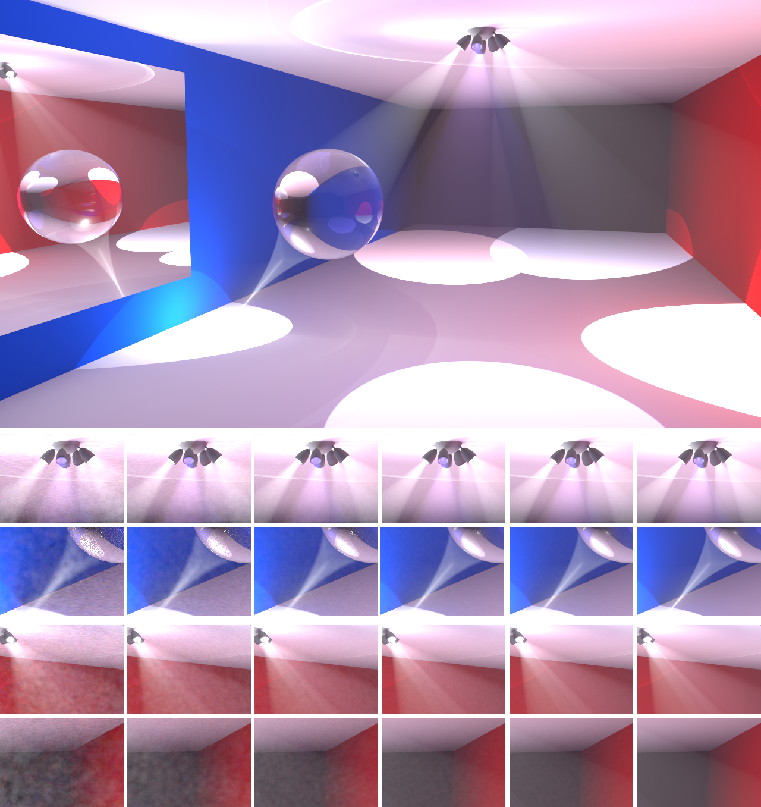
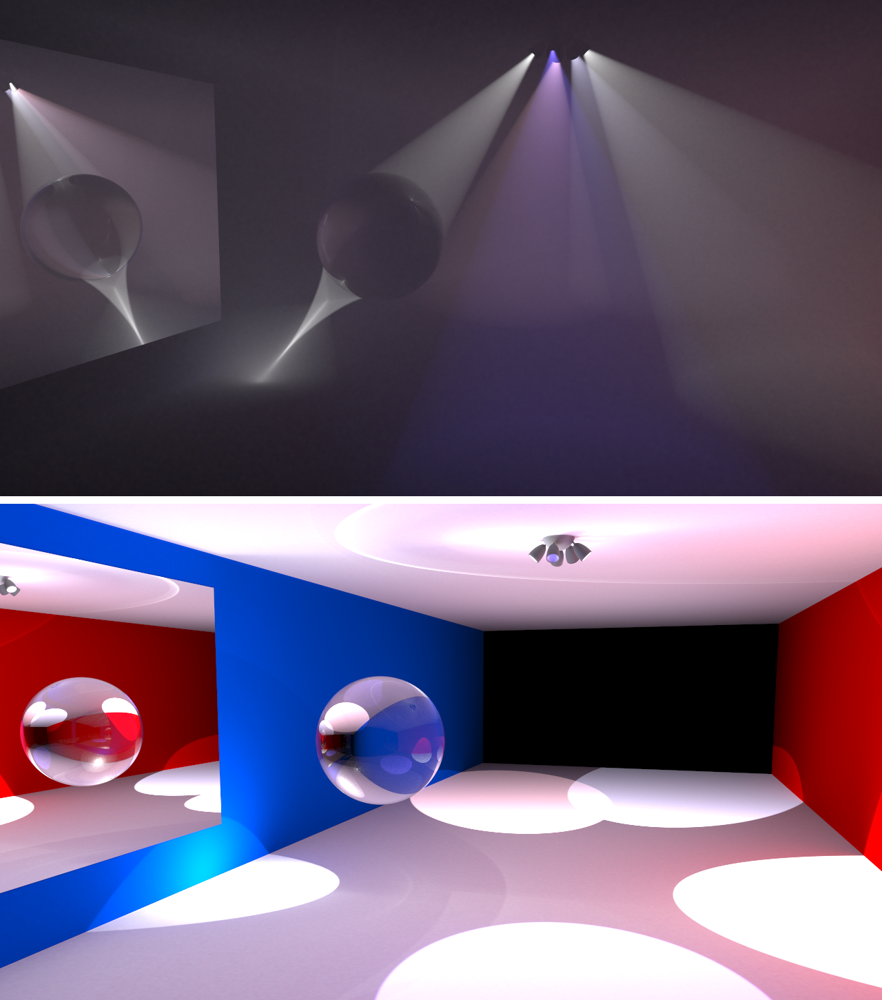

Image rendered using Opposite Renderer. Has a diffuse homogeneous participating medium covering the entire scene. Uses the beam radiance estimate [Jarosz, Zwicker, Wann Jensen] to calculate volumetric radiance. Large image: 208 100 iterations of progressive photon mapping, using 3 Nvidia GTX 480 for almost 19 hours. 1024*1024 emitted photons per iteration. Small, left to right: 10, 50, 200, 1000, 3000 and 208 100 iterations. 3000 iterations in about 6m on 6 GTX 480.
Download this scene (as a zipped .DAE) (as a zipped .Blend). The source must be recompiled with support for participating media to re-render this image.

Top: Only volume photons considered (12000 iterations). Notice volume caustic under glass sphere. Bottom: only surface photons considered.
